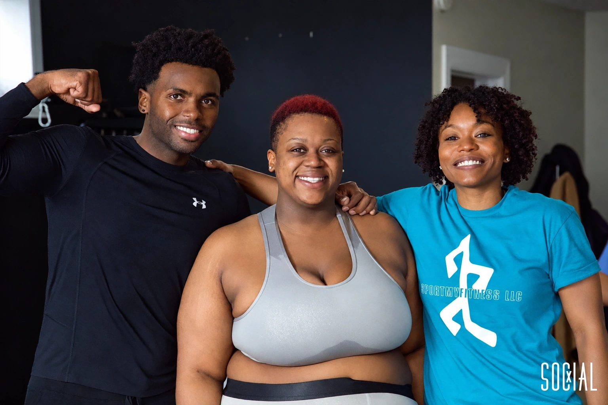

COLLEGE BASKETBALL
ON THE COURT.
Before Sport My Fitness, Myosha Barnes played guard at San José State and Missouri Southern. Both university rosters list Milwaukee as her hometown.
San José State · 2006–07
Missouri Southern · 2008–09

THE PERSON BEHIND THE WORK
Her story spans college basketball, fitness entrepreneurship and community work. Milwaukee is the thread that runs through it.
COLLEGE BASKETBALL
Before Sport My Fitness, Myosha Barnes played guard at San José State and Missouri Southern. Both university rosters list Milwaukee as her hometown.
San José State · 2006–07
Missouri Southern · 2008–09
SPORT MY FITNESS · EST. 2015
Sport My Fitness was established in 2015. She is a certified fitness trainer and strength & conditioning coach. Her qualifications include ISSA certification and an MBA in sports management.
YOUTH & COMMUNITY
In September 2026, she shared her work with young people at the American Indian School, bringing fitness and encouragement beyond the gym. Her school work has also included Pathways High, Whitefish Bay High School and Bader Hillel High School.

IN HER WORDS
From her September 2, 2026 post“Anytime I get an opportunity to support our youth,
YOSHI BARNES
I’m going to show up.”